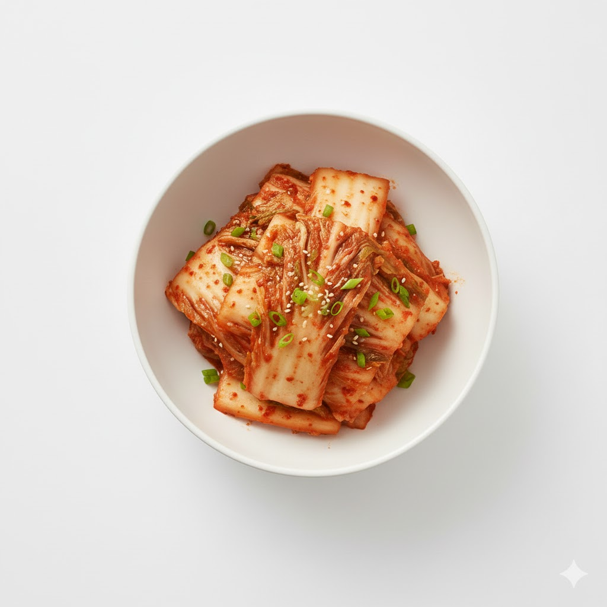

Kimchi
Korea's essential side dish, made from salted and fermented Napa cabbage seasoned with chili powder and various aromatics.
Ingredients
- 1 napa cabbage
- Coarse sea salt (for salting cabbage)
- 1/2 radish
- A handful of green onions
- 4–5 cloves minced garlic
- 1 tsp minced ginger
- 1 cup Korean red pepper flakes (gochugaru)
- 2 tbsp salted shrimp (saeujeot)
- 1 tbsp fish sauce (optional)
- 1 tbsp sugar
Instructions
- Cut the cabbage into quarters and sprinkle coarse salt between each layer. Let it sit for 2–3 hours, flipping halfway.
- Rinse the salted cabbage several times in cold water and drain well.
- Julienne the radish and cut the green onions into 5 cm lengths. Mix garlic, ginger, red pepper flakes, salted shrimp, fish sauce (optional), and sugar to make the kimchi paste.
- Spread the seasoning and radish/green onion mixture evenly between the cabbage leaves.
- Store in a container, ferment at room temperature for 1–2 days, then refrigerate.